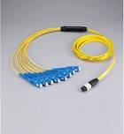
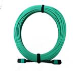
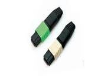
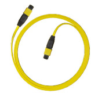
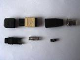
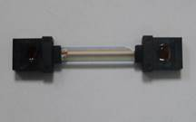
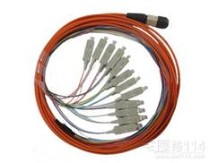
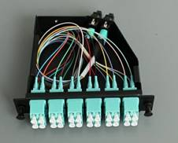

MPO/MTP FIBER PATCH CORD



Features
SM or MM available; PC(plane) or APC(8 degree) available
Different IL index and various color available
Stable performance index by PIN fiexed position of connecting
4，8，12......72Cores for one connecter available
Maximum can be 288 cores each patchcord
Plug type connector with locking structure
High density which convenient for wiring and management system
Comply with Telcordia GR-1435-CORE and RoHS standard
Performance Index
Type |
SM |
MM |
Fiber Diameter |
9/125um |
62.5/125um 50/125um |
Insertion Loss(dB) |
<0.3/<0.5/<0.7dB |
<0.5/＜0.7 dB |
Return Loss(dB) |
>60dB |
>30 dB |
Insert-pull Test |
500Times＜0.5 dB |
|
Opearting Temperature(℃ |
-40℃～+80℃ |
|
Tensile Resistance |
15kgf |
|